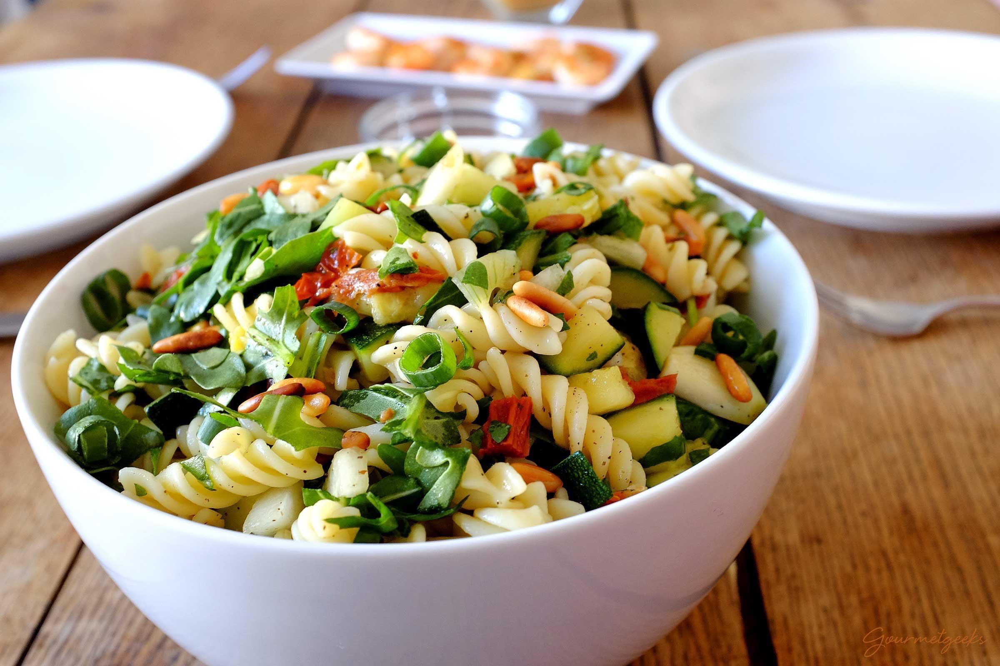

Menu
Kochideen
Italienischer Nudelsalat mit Rucola und Tomaten
Schwierigkeit: **
Zubereitungszeit: 20 Minuten
6 Portionen

Zutaten
350 g Nudeln
150 g passierte Tomaten
4 EL Balsamico
4 EL Olivenöl
1 TL Zucker
Salz & Pfeffer
100 g getrocknete Tomaten in Öl abgetropft
2 große Handvoll Rucola
250 g Cherrytomaten
1 Mozzarella
Zubereitung
Nudeln nach Packungsanweisung al dente garen.
In der Zwischenzeit in einer großen Schüssel aus passierten Tomaten, Essig, Öl, Zucker, Salz und Pfeffer das Dressing anrühren. Würzig abschmecken.
Getrocknete Tomaten in Streifen schneiden, Rucola nach Bedarf schneiden und Tomaten halbieren.
Getrocknete Tomaten in Streifen schneiden, Rucola nach Bedarf schneiden und Tomaten halbieren.
Nudeln kalt abschrecken, dann mit der Sauce vermischen. Restliche Zutaten hinzufügen und zuletzt Mozzarella in die Schüssel zupfen.
Alles gut vermischen, nach Bedarf noch einmal abschmecken und genießen.